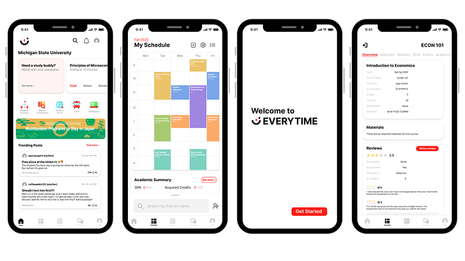
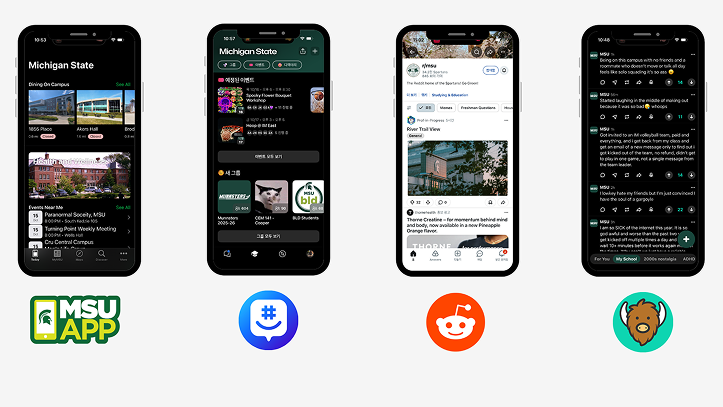
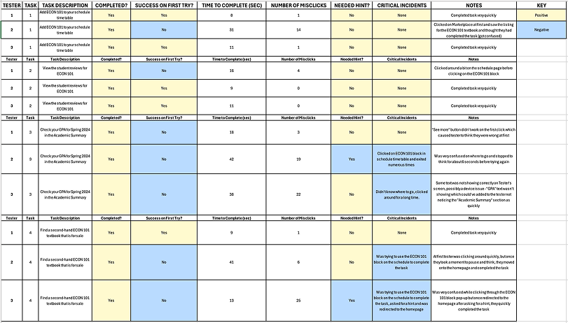
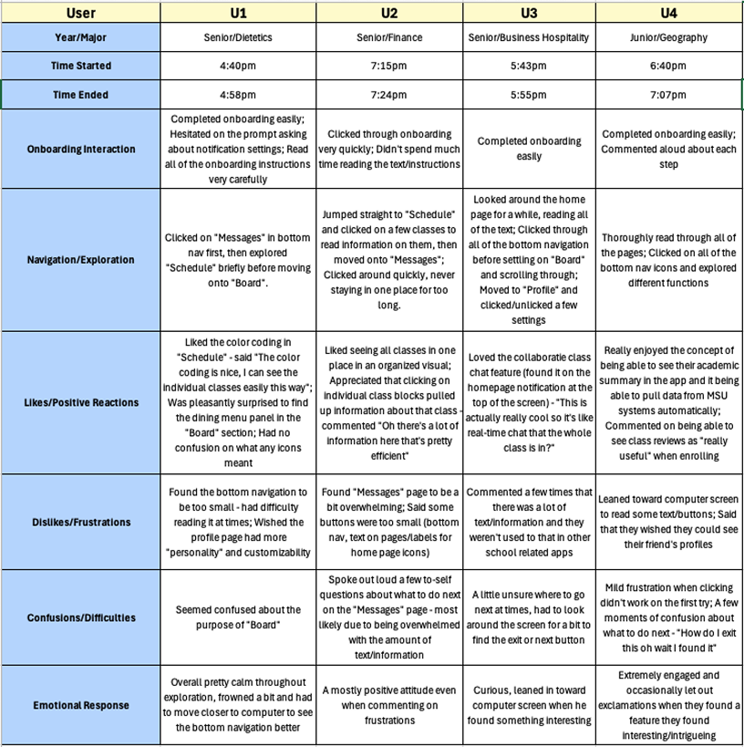
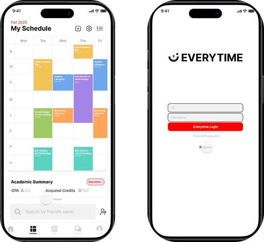

User Experience Research Project
Localizing Everytime for Michigan State University Students
Adapting Korea’s leading campus app to reduce digital overload and improve student connection at MSU.

Overview
Project Brief
Michigan State University students juggle multiple platforms every day to manage classes, communication, events, and campus life. This fragmentation leads to mental fatigue, missed information, and a growing sense of disconnection from campus.
This project explores how Everytime, Korea’s most widely used campus app, could be localized for MSU students to create a single, unified hub that supports academic life, social connection, and campus engagement in one place.
My Role
Individual Project
I was responsible for leading user research, synthesizing insights, designing and iterating the mobile UI, and conducting usability testing with MSU students. My work focused on translating research findings into clear, accessible design decisions throughout the prototype.
Target Users
Michigan State University students navigating academics, communication, and campus life across multiple disconnected platforms.
The Outcome
A unified mobile prototype that centralizes academic schedules, class-based communication, social features, and campus services into one intuitive system designed around student mental models.
Features & Iterations
Course Hub Integration
Schedule blocks act as the central entry point for class chat, reviews, materials, and academic summaries.
Reduce Cognitive Load
Simplified navigation, clearer affordances, and reduced text density across key screens.
Social Core
Friends list, profiles, and community boards designed with accountability and anonymity through MSU login.
Research & Validation
Research Summary
To understand how MSU students currently manage academics, communication, and campus life, I conducted a mixed-method research study that combined interviews, usability testing, competitive analysis, and secondary research.
Primary research included semi-structured interviews and task-based usability testing with MSU students across different majors, years, and living situations. Secondary research focused on digital overload, FOMO, tech/stressness, and accountability issues in campus social platforms. Together, this research helped identify where fragmentation causes pain points and what students expect from a centralized campus app.
Methods used
- User interviews with MSU students
- Task-based usability testing using a high-fidelity Figma prototype
- Competitive analysis of YikYak, Reddit, GroupMe, and the MSU App
- Secondary research on digital overload and student well-being

Key Findings
Fragmentation creates cognitive overload
Students juggle multiple apps daily to stay informed. This constant context switching leads to mental fatigue, missed information, and disengagement from campus life.
Students think in terms of courses, not features
During usability testing, students consistently treated class schedule blocks as the primary entry point for all academic information, even when features technically lived elsewhere.
Community matters, but accountability is essential
Students value open discussion and peer advice but expressed concern about anonymity enabling toxicity. Trust and familiarity strongly influence adoption.
“I would say I use about 10 apps a day to keep informed on MSU stuff, that’s not including D2L.”
– User 2
(Find GPA)
Personas
Three personas were developed to represent distinct but overlapping student needs.
Curious Clara
First-year, on-campus student
Clara is excited but overwhelmed by college life. She wants a reliable way to find class information, events, and peers without feeling lost or intimidated.
Needs
- Clear guidance and onboarding
- Centralized academic and campus information
- Low-pressure ways to engage socially
Burnt-Out Ben
Senior, highly involved student leader
Ben is juggling classes, leadership roles, and part-time work. He wants efficiency and organization without adding another app to his already crowded phone.
Needs
- Time-saving tools
- Centralized communication
- Customizable notifications
Connected Carmen
Commuter student
Carmen wants to feel included despite spending limited time on campus. She relies on digital tools to stay connected academically and socially.
Needs
- Easy access to campus updates
- Flexible engagement
- Community visibility without physical presence
Journey Mapping
Journey maps were created for each persona to visualize how students discover, adopt, and integrate the app into their daily routines.
Across all three journeys, the most critical moments occurred during onboarding and early exploration, where information overload or unclear navigation could easily lead to drop-off. Habit formation depended heavily on whether the app reduced effort compared to existing tools.


Usability Testing
A high-fidelity prototype was built in Figma and tested using a think-aloud protocol. Participants completed four core tasks:
- Adding a class
- Reading a class review
- Finding the academic summary
- Locating a used textbook
Observations were recorded using structured coding sheets to identify patterns and usability issues.

Key Usability Issues
Academic information was hard to find
100% of users struggled to locate the Academic Summary. They repeatedly navigated through class blocks, assuming academic data should live there.
Discoverability relied too heavily on visual hints
Participants depended on Figma hotspot glows to progress, suggesting insufficient visual cues in the interface itself.
Navigation and information density caused friction
Small touch targets, dense text, and unclear labels made scanning difficult and increased task time.
Exploratory Playtesting
In addition to task-based usability testing, I conducted open-ended playtesting sessions to observe how students naturally explored the prototype without structured tasks.
Participants were encouraged to navigate freely while thinking aloud. This approach helped surface emotional responses, spontaneous reactions, and moments of delight or frustration that would not have emerged during scripted testing.

Playtesting Insights
Students quickly understood the core concept
All participants were able to complete onboarding without assistance. Several users commented positively on the clarity of the onboarding steps and appreciated being guided through the app before exploring independently.
This suggests the onboarding flow effectively establishes the app’s purpose and basic navigation.
Course-based organization felt intuitive and reassuring
Participants consistently reacted positively to the color-coded schedule and course-centric layout. Seeing all classes organized visually helped users orient themselves quickly and understand where to find academic information.
Multiple users explicitly noted that having class blocks pull up related information “made sense” and felt efficient.
Information density caused moments of friction
While users appreciated the amount of information available, several participants felt overwhelmed when encountering text-heavy screens, particularly within the Messages page.
Small buttons, dense text, and closely packed elements slowed exploration and led to hesitation or repeated tapping behaviors.
Navigation labels and affordances were not always clear
Some users expressed uncertainty around the purpose of certain features, such as the “Board,” or hesitated when deciding what to click next.
These moments indicated opportunities to improve labeling, hierarchy, and visual affordances.
Emotional responses revealed engagement and curiosity
Despite moments of confusion, emotional responses were largely positive. Users leaned toward the screen, explored features voluntarily, and expressed excitement when discovering helpful or familiar functionality, such as academic summaries and class reviews.
This behavior suggested strong engagement and interest in the concept, even when usability issues were present.
Design Iterations
Based on testing insights, several changes were prioritized:
- Reframed class blocks as a Course Hub to align with user mental models
- Moved Academic Summary to more prominent locations
- Increased button sizes and strengthened visual affordances
- Reduced text density and improved hierarchy in the Messages and Board views
These changes improved discoverability and reduced cognitive effort during repeat testing.

Final Solution
The final prototype presents Everytime MSU as a unified academic and social hub designed specifically for MSU students. By centralizing schedules, class communication, and campus resources, the app reduces fragmentation while maintaining opportunities for community connection.
Reflection
This project reinforced the importance of designing around existing mental models rather than system logic. Even well-intentioned features fail when they don’t align with user expectations.
It also highlighted how usability issues compound in complex platforms and how research-driven iteration is essential for creating systems that feel intuitive, inclusive, and sustainable over time.